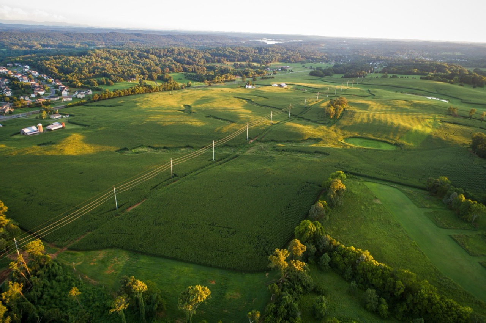
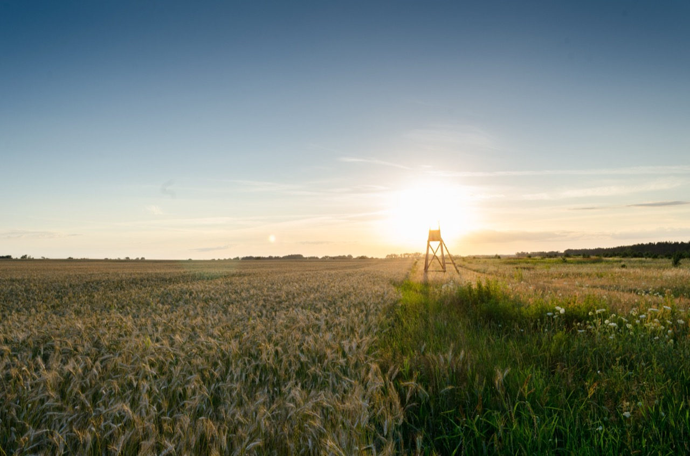
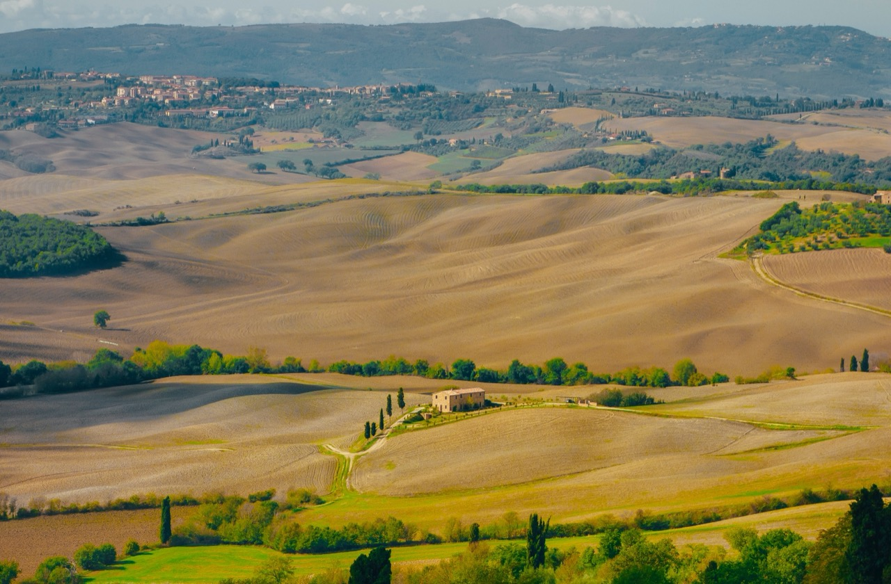

The aesthetic category of farmland wallpapers occupies a distinctive and sustained position within contemporary digital visual culture. Images of agricultural landscapes—fields in various states of growth and harvest, farm buildings and structures, pastoral scenes encompassing livestock and cultivated land—appeal to diverse audiences for multiple reasons. Farmland imagery appeals to individuals seeking calm and peaceful aesthetic alternatives to urban environments. The imagery evokes associations with natural cycles, agricultural productivity, and rural livelihoods. The visual characteristics of farmland—the geometric patterns created by agricultural organization, the chromatic variety as crops grow and seasons change, the architectural elements of farm structures—create visually compelling source material for high-resolution digital backgrounds.
The technical characteristics of contemporary farmland wallpapers reflect the demands of high-resolution digital display and the particular visual qualities of agricultural landscapes. Photographers and digital artists working in this genre must understand the specific visual characteristics of different crops at various growth stages, the color palettes associated with different seasons and regions, and the compositional possibilities within agricultural environments. The geometric patterns created by cultivated fields—the linear structures of furrows, the grid-like organization of crop rows, the organized parcellation of agricultural land—create distinctive compositional opportunities.
The photographic documentation of farmland varies significantly depending on geographic region, season, and agricultural system. Temperate region farmland in summer might feature vibrant green fields, the orderly geometry of crops in full growth punctuated by farm buildings and infrastructure. Autumn farmland displays dramatic color transformations as crops mature and harvests begin—golden grains, rust-colored dried vegetation, rich earth tones of harvested fields. Spring farmland features the fresh greens of new growth, the turned earth of prepared fields, the ordered rows of young crops. Winter farmland presents bare geometric patterns, sometimes snow-covered landscapes, the structural clarity of dormant agricultural systems. This seasonal variation ensures visual novelty and variety within the farmland wallpaper category.

The geographic diversity of agricultural landscapes contributes visual and conceptual richness to farmland wallpapers. Temperate agricultural regions feature distinctive visual characteristics shaped by climate and agricultural tradition. Mediterranean agricultural landscapes display particular combinations of crops and structures reflecting the regional climate and agricultural economy. Tropical agricultural regions feature entirely different crops and visual characteristics reflecting completely different environmental conditions. Rice paddies in East Asia create distinctive visual patterns and geometric organization completely different from grain fields in North America. This geographic diversity enables creators and viewers to explore varied agricultural visual cultures globally.
The cultural and social dimensions of farmland imagery deserve consideration. Agricultural landscape imagery carries associations with particular lifestyle values—connection to nature, productivity and purposeful labor, environmental stewardship (whether or not agricultural practice actually achieves such stewardship), rural community values, and traditional ways of life. The prevalence of farmland wallpapers reflects and reinforces idealized associations with agricultural life, even among viewers living entirely urban existences with no direct involvement in agricultural production. The imagery functions partly as escapist aesthetic, offering psychological relief from urban environments through visual engagement with representations of rural landscapes.
The environmental and sustainability implications of agricultural landscapes deserve critical engagement. Contemporary industrial agriculture often involves significant environmental consequences—soil degradation, water pollution, biodiversity loss, pesticide use, and climate impacts. The aesthetically appealing visual representations of farmland in wallpaper imagery may inadvertently sanitize or obscure these environmental realities, presenting agricultural systems as universally benign and ecologically sound when many actual agricultural practices create substantial environmental harm. Simultaneously, wallpaper imagery documenting sustainable and regenerative agricultural practices can provide positive visual representation and encouragement for such approaches.

The distinctions between different agricultural visual categories appear in farmland wallpapers. Industrial agricultural landscapes featuring vast monoculture fields of single crops create particular visual effects—geometric precision, homogeneity, and scale suggesting productivity and efficiency. Smaller-scale or diversified agricultural landscapes feature greater visual complexity and biodiversity, with multiple crops, habitat patches, and visual heterogeneity. Heritage and traditional agricultural systems visible in certain regions reflect centuries of accumulated practice and adaptation. These diverse agricultural systems create visually and conceptually distinct wallpaper possibilities.
The composition and framing choices in farmland wallpaper photography or digital art significantly affect visual impact and emotional resonance. Aerial or elevated perspectives reveal the geometric patterns of agricultural organization, emphasizing the scale and extent of cultivated land. Ground-level perspectives position viewers within the agricultural landscape, creating more intimate and immersive experiences. Wide-angle compositions emphasize landscape extent while close-up framing focuses attention on specific details. The compositional choices made by photographers and artists substantially influence the visual and emotional character of resulting images.
The color palettes characteristic of farmland imagery vary considerably with season, region, and crop type. Summer farmland features vivid greens and earth tones. Autumn farmland displays warm colors—golds, oranges, browns. Spring farmland shows pale greens and earth colors. Winter farmland presents grayscale and muted color palettes in temperate regions. The varied color possibilities within farmland imagery ensure visual richness and capacity to serve diverse aesthetic preferences and seasonal contexts.
The relationship between farmland wallpapers and broader landscape aesthetic traditions extends back centuries. Landscape painting traditions have long celebrated rural and pastoral scenery. Romantic era landscape aesthetics emphasized the sublime and beautiful qualities of natural and cultivated landscapes. Contemporary landscape photography continues traditions of careful composition and aesthetic appreciation of landscape. Farmland wallpapers situate themselves within this long tradition of landscape aesthetic appreciation, adapted to contemporary digital media contexts.
The accessibility of farmland imagery through digital platforms has democratized visual access to agricultural landscapes globally. Individuals in urban environments with no personal farming experience or rural connections can regularly encounter and appreciate agricultural landscape imagery. This accessibility may increase understanding of agricultural systems and food production processes among populations increasingly distant from agricultural contexts. Conversely, the aestheticization of farmland through wallpaper imagery may distance viewers from the material realities and labor involved in agricultural production.
The technical achievement of capturing and presenting farmland imagery in high-definition formats reveals sophisticated understanding of photographic and digital rendering techniques. Professional photographers working in agricultural regions understand how to capture distinctive and visually compelling compositions within farmland environments. Digital artists working with farmland themes understand how to render natural systems digitally with convincing detail and visual impact. The technical sophistication underlying apparently simple landscape imagery deserves recognition and appreciation.
The market demand for farmland wallpapers reflects sustained interest in agricultural imagery across diverse viewer populations. Designers and content creators seek quality farmland imagery for diverse applications. Individuals personalizing digital devices with wallpapers expressing aesthetic preferences and values create demand for varied farmland content. This sustained demand supports continued production of new farmland imagery and encourages photographers and digital artists to explore fresh approaches and novel documentation of agricultural landscapes.

The relationship between documented or created farmland imagery and actual contemporary agricultural practice deserves critical attention. Many industrialized agricultural systems, while visually appealing when rendered in wallpaper form, involve substantial environmental and social concerns. The gentle aesthetic presentation of farmland wallpapers may mask harsh realities of agricultural labor, pesticide use, and environmental damage. More critical approaches to farmland imagery might emphasize sustainable and regenerative agricultural practices, seeking to promote visual interest in more ecologically sound approaches through compelling aesthetic representation.
The seasonal and temporal dimensions of farmland imagery create opportunities for dynamic engagement with wallpaper categories. Individuals rotating seasonal farmland wallpapers can experience visual engagement with agricultural calendar and seasonal cycles. This practice connects digital aesthetic consumption to natural and agricultural rhythms, potentially encouraging greater awareness of seasonal changes and agricultural production cycles. The temporal dimension of farmland imagery extends beyond single static images toward recognition of dynamic processes and transformations.
The cultural identity and place attachment dimensions of farmland imagery deserve recognition. Individuals from agricultural backgrounds or rural communities may experience particular emotional resonance with farmland imagery, recognizing landscapes familiar from personal experience. Farmland wallpapers can serve functions of connecting people to places and ways of life, maintaining visual and emotional connection to agricultural heritage even for individuals who have moved away from rural contexts. This emotional and cultural significance extends beyond purely aesthetic appreciation.
The ongoing evolution of farmland wallpaper aesthetics reflects broader changes in agricultural practice, environmental awareness, and design sensibilities. Contemporary farmland imagery increasingly emphasizes sustainable and regenerative agriculture, celebrating practices that balance agricultural productivity with environmental stewardship. Digital rendering technologies enable increasingly sophisticated and detailed agricultural landscape representation. The future of farmland wallpapers likely involves continued evolution as agricultural systems change, environmental consciousness develops, and digital imaging technology advances. The category appears likely to maintain cultural relevance and visual interest for the foreseeable future.